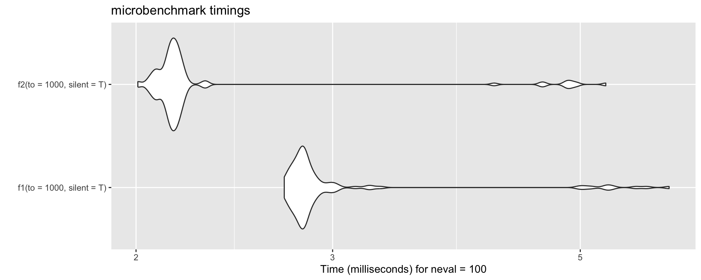
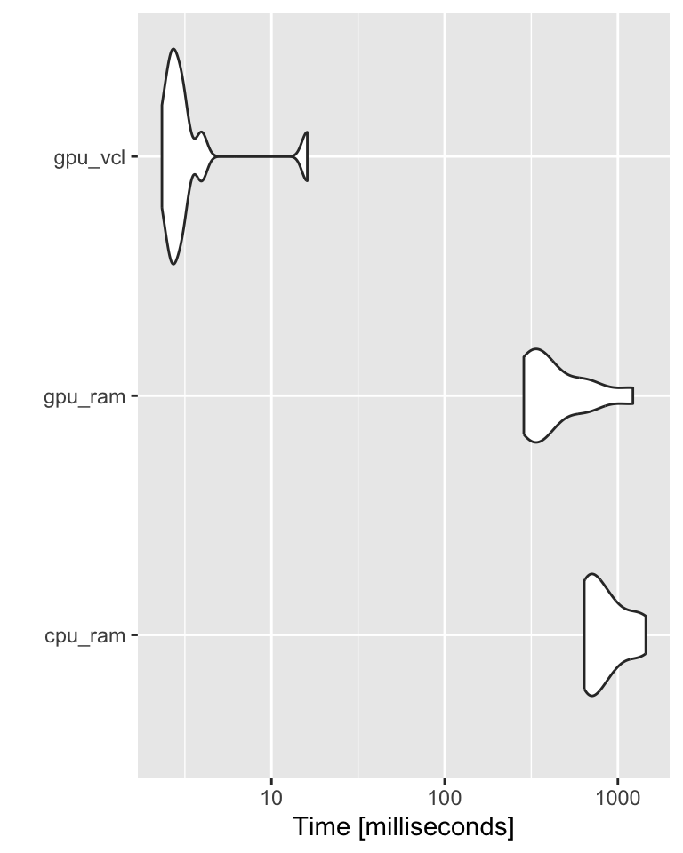

Debugging, Profiling, and a Bit of Optimization
RaukR 2025 • R Beyond the Basics
Marcin Kierczak
09-Jun-2025
Run Forrest, run!
- My code does not run! – debugging
- Now it does run but… out of memory! – profiling
- It runs! It says it will finish in 5
minutesyears. – optimization

Types of bugs
- üî£ Syntax errors
- üß© Logic
Everything works and produces seemingly valid output that is WRONG!
IMHO those are the hardest üíÄ to debug!
How to avoid bugs
- Encapsulate your code in smaller units üç± (functions), you can test.
- Use classes and type checking üÜó.
- Test üß™ at the boundaries, e.g. loops at min and max value.
- Feed your functions with test data üíæ that should result with a known output.
- Use antibugging üï∏:
stopifnot(y <= 75)
Floating confusion
[1] 0.1 0.2 0.3 0.4 0.5 0.6 0.7 0.8 0.9
[1] FALSE FALSE FALSE FALSE FALSE FALSE FALSE FALSE FALSE
[1] FALSE FALSE FALSE FALSE TRUE FALSE FALSE FALSE FALSE[1] 0
[1] -1.110223e-16üíÄ Beware of floating point arithmetic! üíÄ
How to float üèä
Comparing floating point numbers:
Final thoughts on floating
double.eps double.neg.eps double.xmin double.xmax double.base
2.220446e-16 1.110223e-16 2.225074e-308 1.797693e+308 2.000000e+00
double.digits
5.300000e+01 Handling Errors
Let us generate some errors:
input <- c(1, 10, -7, -2/5, 0, 'char', 100, pi, NaN)
for (val in input) {
(paste0('Log of ', val, 'is ', log10(val)))
}Error in log10(val): non-numeric argument to mathematical function
So, how to handle this mess?
Handling Errors – try
[1] "Log of 1 is 0"
[2] "Log of 10 is 1"
[3] "Log of -7 is NaN"
[4] "Log of -0.4 is NaN"
[5] "Log of 0 is -Inf"
[6] "Log of char is NA"
[7] "Log of 100 is 2"
[8] "Log of 3.14159265358979 is 0.497149872694133"
[9] "Log of NaN is NaN" Handling Errors – tryCatch block:
[1] "Log of 1 is 0"
[1] "Log of 10 is 1"
[1] "Warning! Negative argument supplied. Negating."
[1] "Log of -7 is 0.845098040014257"
[1] "Warning! Negative argument supplied. Negating."
[1] "Log of -0.4 is -0.397940008672038"
[1] "Log of 0 is -Inf"
[1] "Log of NA is NA"
[1] "Log of 100 is 2"
[1] "Log of 3.14159265358979 is 0.497149872694133"
[1] "Log of NaN is NaN"Debugging – errors and warnings
- An error in your code will result in a call to the
stop()function that:- Breaks the execution of the program (loop, if-statement, etc.)
- Performs the action defined by the global parameter
error.
- A warning just prints out the warning message (or reports it in another way)
Debugging – what are my options?
- Old-school debugging: a lot of
printstatements- print values of your variables at some checkpoints,
- sometimes fine but often laborious,
- need to remove/comment out manually after debugging.
- Dumping frames
- on error, R state will be saved to a file,
- file can be read into debugger,
- values of all variables can be checked,
- can debug on another machine, e.g. send dump to your colleague!
- Traceback
- a list of the recent function calls with values of their parameters
- Step-by-step debugging
- execute code line by line within the debugger
Option 1: dumping frames
Hint: Last empty line brings you back to the environments menu.
Option 2: traceback
Error in log10(x): non-numeric argument to mathematical function> traceback()
2: f(x) at #2
1: g("test")traceback() shows what were the function calls and what parameters were passed to them when the error occurred.
Option 3: step-by-step debugging
Profiling – proc.time()
Profiling is the process of identifying memory and time bottlenecks üç∂ in your code.
user time– CPU time charged for the execution of user instructions of the calling process,system time– CPU time charged for execution by the system on behalf of the calling process,elapsed time– total CPU time elapsed for the currently running R process.
Profiling – system.time()
user system elapsed
0.072 0.005 0.077
user system elapsed
0.197 0.003 0.200 Profiling in action
These 4 functions fill a large vector with values supplied by function f.
1 – loop without memory allocation.
Profiling in action cted.
But it is maybe better to use…
vectorization!
3 – vectorized loop without memory allocation.
Profiling our functions
| fn | user.self | sys.self | elapsed |
|---|---|---|---|
| fn1 | 6.284 | 1.483 | 7.772 |
| fn2 | 0.200 | 0.002 | 0.203 |
| fn3 | 0.000 | 0.000 | 0.001 |
| fn4 | 0.001 | 0.000 | 0.001 |
The system.time() function is not the most accurate though. During the lab, we will experiment with package microbenchmark.
More advanced profiling
We can also do a bit more advanced profiling, including the memory profiling, using, e.g. Rprof() function.
Rprof('profiler_test.out', interval = 0.01, memory.profiling = T)
for (i in 1:5) {
result <- fun_fill_loop2(n = 10e4, "runif")
print(head(result))
}
Rprof(NULL)[1] 0.72293790 0.96989386 0.01724208 0.43169021 0.19550217 0.46925767
[1] 0.88623449 0.13972485 0.77087403 0.04393801 0.66908305 0.94489715
[1] 0.979353337 0.656599782 0.769791225 0.305157106 0.345087724 0.008345194
[1] 0.4602866 0.9517964 0.7278917 0.9091922 0.7115739 0.4463475
[1] 0.5919149 0.3530745 0.3964416 0.4886414 0.3113988 0.0676992And let us summarise:
summary <- summaryRprof("profiler_test.out", memory = "both")
knitr::kable(summary$by.self)
unlink("profiler_test.out")| self.time | self.pct | total.time | total.pct | mem.total | |
|---|---|---|---|---|---|
| “eval” | 0.45 | 52.94 | 0.85 | 100.00 | 974.4 |
| “force” | 0.18 | 21.18 | 0.23 | 27.06 | 368.5 |
| “fun_fill_loop2” | 0.09 | 10.59 | 0.85 | 100.00 | 974.4 |
| “runif” | 0.08 | 9.41 | 0.08 | 9.41 | 64.3 |
| “is.list” | 0.02 | 2.35 | 0.02 | 2.35 | 39.1 |
| “baseenv” | 0.01 | 1.18 | 0.01 | 1.18 | 18.6 |
| “is.pairlist” | 0.01 | 1.18 | 0.01 | 1.18 | 0.0 |
| “parent.frame” | 0.01 | 1.18 | 0.01 | 1.18 | 0.0 |
Profiling – profr package
There are also packages available that enable even more advanced profiling:
This returns a table that can be visualised:
| level | g_id | t_id | f | start | end | n | leaf | time | source |
|---|---|---|---|---|---|---|---|---|---|
| 1 | 1 | 1 | .main | 0.00 | 0.18 | 1 | FALSE | 0.18 | NA |
| 2 | 1 | 1 | execute | 0.00 | 0.18 | 1 | FALSE | 0.18 | NA |
| 3 | 1 | 1 | rmarkdown::render | 0.00 | 0.18 | 1 | FALSE | 0.18 | NA |
| 4 | 1 | 1 | knitr::knit | 0.00 | 0.18 | 1 | FALSE | 0.18 | NA |
| 5 | 1 | 1 | process_file | 0.00 | 0.18 | 1 | FALSE | 0.18 | NA |
| 6 | 1 | 1 | xfun:::handle_error | 0.00 | 0.18 | 1 | FALSE | 0.18 | NA |
| 7 | 1 | 1 | withCallingHandlers | 0.00 | 0.18 | 1 | FALSE | 0.18 | base |
| 8 | 1 | 1 | process_group | 0.00 | 0.18 | 1 | FALSE | 0.18 | NA |
| 9 | 1 | 1 | call_block | 0.00 | 0.18 | 1 | FALSE | 0.18 | NA |
| 10 | 1 | 1 | block_exec | 0.00 | 0.18 | 1 | FALSE | 0.18 | NA |
| 11 | 1 | 1 | eng_r | 0.00 | 0.18 | 1 | FALSE | 0.18 | NA |
| 12 | 1 | 1 | in_input_dir | 0.00 | 0.18 | 1 | FALSE | 0.18 | NA |
| 13 | 1 | 1 | in_dir | 0.00 | 0.18 | 1 | FALSE | 0.18 | NA |
| 14 | 1 | 1 | evaluate | 0.00 | 0.18 | 1 | FALSE | 0.18 | NA |
| 15 | 1 | 1 | evaluate::evaluate | 0.00 | 0.18 | 1 | FALSE | 0.18 | NA |
| 16 | 1 | 1 | withRestarts | 0.00 | 0.18 | 1 | FALSE | 0.18 | base |
| 17 | 1 | 1 | withRestartList | 0.00 | 0.18 | 1 | FALSE | 0.18 | NA |
| 18 | 1 | 1 | withOneRestart | 0.00 | 0.18 | 1 | FALSE | 0.18 | NA |
| 19 | 1 | 1 | doWithOneRestart | 0.00 | 0.18 | 1 | FALSE | 0.18 | NA |
| 20 | 1 | 1 | withRestartList | 0.00 | 0.18 | 1 | FALSE | 0.18 | NA |
| 21 | 1 | 1 | withOneRestart | 0.00 | 0.18 | 1 | FALSE | 0.18 | NA |
| 22 | 1 | 1 | doWithOneRestart | 0.00 | 0.18 | 1 | FALSE | 0.18 | NA |
| 23 | 1 | 1 | with_handlers | 0.00 | 0.18 | 1 | FALSE | 0.18 | NA |
| 24 | 1 | 1 | eval | 0.00 | 0.18 | 1 | FALSE | 0.18 | BiocGenerics |
| 25 | 1 | 1 | eval | 0.00 | 0.18 | 1 | FALSE | 0.18 | BiocGenerics |
| 26 | 1 | 1 | withCallingHandlers | 0.00 | 0.18 | 1 | FALSE | 0.18 | base |
| 27 | 1 | 1 | withVisible | 0.00 | 0.18 | 1 | FALSE | 0.18 | base |
| 28 | 1 | 1 | eval | 0.00 | 0.18 | 1 | FALSE | 0.18 | BiocGenerics |
| 29 | 1 | 1 | eval | 0.00 | 0.18 | 1 | FALSE | 0.18 | BiocGenerics |
| 30 | 1 | 1 | table | 0.00 | 0.18 | 1 | FALSE | 0.18 | BiocGenerics |
| 31 | 1 | 1 | standardGeneric | 0.00 | 0.18 | 1 | FALSE | 0.18 | base |
| 32 | 1 | 1 | eval | 0.00 | 0.18 | 1 | FALSE | 0.18 | BiocGenerics |
| 33 | 1 | 1 | eval | 0.00 | 0.18 | 1 | FALSE | 0.18 | BiocGenerics |
| 34 | 1 | 1 | eval | 0.00 | 0.18 | 1 | FALSE | 0.18 | BiocGenerics |
| 35 | 1 | 1 | table | 0.00 | 0.18 | 1 | FALSE | 0.18 | BiocGenerics |
| 36 | 1 | 1 | base::table | 0.00 | 0.18 | 1 | FALSE | 0.18 | NA |
| 37 | 1 | 1 | factor | 0.00 | 0.16 | 1 | FALSE | 0.16 | base |
| 37 | 2 | 1 | as.integer | 0.16 | 0.18 | 1 | TRUE | 0.02 | base |
| 38 | 1 | 1 | unique | 0.00 | 0.10 | 1 | FALSE | 0.10 | BiocGenerics |
| 39 | 1 | 1 | unique.default | 0.00 | 0.10 | 1 | TRUE | 0.10 | base |
Profiling – profr package cted.
We can also plot the results using – proftools package-
Profiling with profvis
Yet another nice way to profile your code is by using Hadley Wickham’s profvis package:
Profiling with profvis cted.
Optimizing your code
We should forget about small efficiencies, say about 97% of the time: premature optimization is the root of all evil. Yet we should not pass up our opportunities in that critical 3%. A good programmer will not be deluded into complacency by such reasoning, he will be wise to look carefully at the critical code; but only after that code has been identified.
– Donald Knuth

source: https://xkcd.com/1319

source: https://xkcd.com/1205/
Ways to optimize the code
- write it in a more efficient way, e.g. use vectorization or
*applyfamily instead of loops etc., - allocating memory to avoid copy-on-modify,
- use package
BLASfor linear algebra, - use
bigmemorypackage, - GPU computations,
- multicore support, e.g.
multicore,snow - use
futures - use
data.tableortibbleinstead ofdata.frame
Copy-on-modify
Check where the objects are in the memory:
What happens if we modify a value in one of the matrices?
Avoid copying by allocating memory
No memory allocation
Avoid copying by allocating memory cted.
With memory allocation
f2 <- function(to = 3, silent = FALSE) {
tmp <- vector(length = to, mode='numeric')
for (i in 1:to) {
a1 <- address(tmp)
tmp[i] <- i
a2 <- address(tmp)
if(!silent) { print(paste0(a1, " --> ", a2)) }
}
}
f2()[1] "0x127e4ff88 --> 0x127e4ff88"
[1] "0x127e4ff88 --> 0x127e4ff88"
[1] "0x127e4ff88 --> 0x127e4ff88"Allocating memory – benchmark.
GPU
A = matrix(rnorm(1000^2), nrow=1000) # stored: RAM, computed: CPU
B = matrix(rnorm(1000^2), nrow=1000)
gpuA = gpuMatrix(A, type = "float") # stored: RAM, computed: GPU
gpuB = gpuMatrix(B, type = "float")
vclA = vclMatrix(A, type = "float") # stored: GPU, computed: GPU
vclB = vclMatrix(B, type = "float")
bch <- microbenchmark(
cpu_ram = A %*% B,
gpu_ram = gpuA %*% gpuB,
gpu_vcl = vclA %*% vclB,
times = 10L) More on Charles Determan’s Blog.
GPU cted.
Parallelization using package parallel
Easiest to parallelize is lapply: